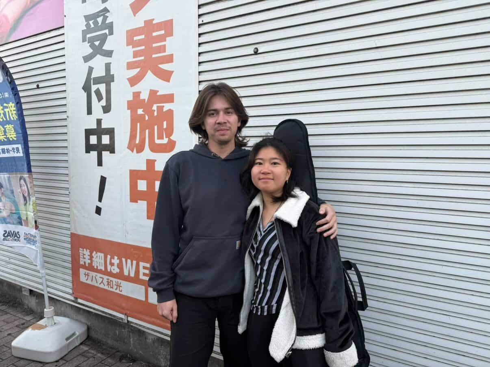
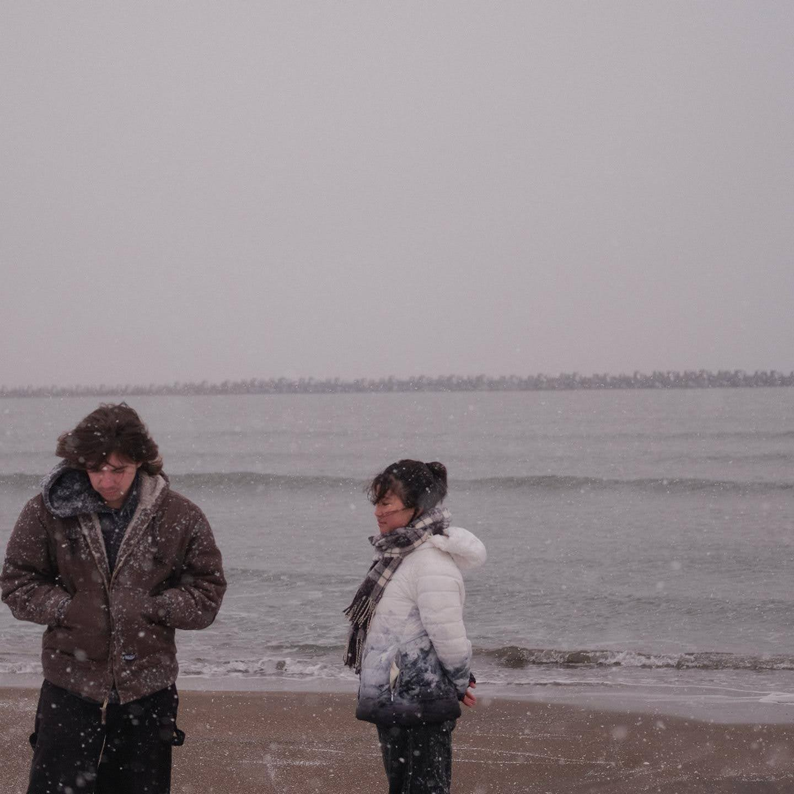
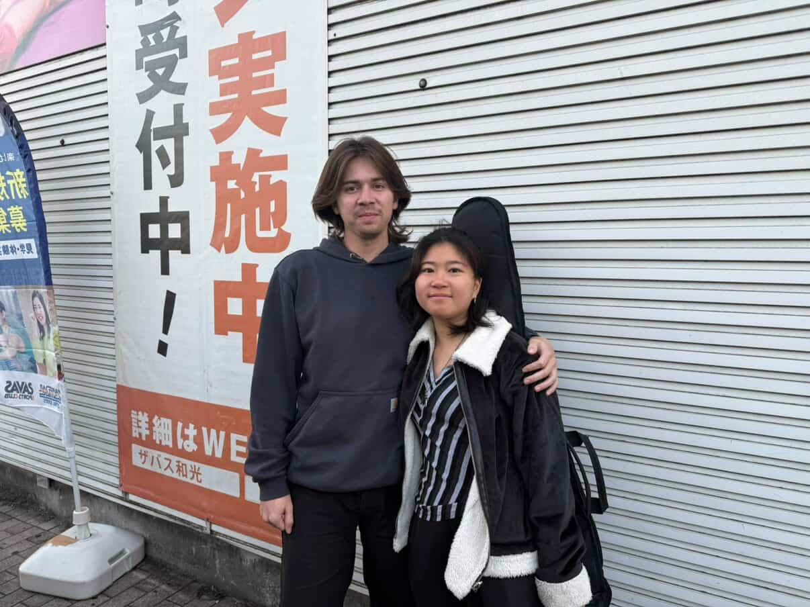
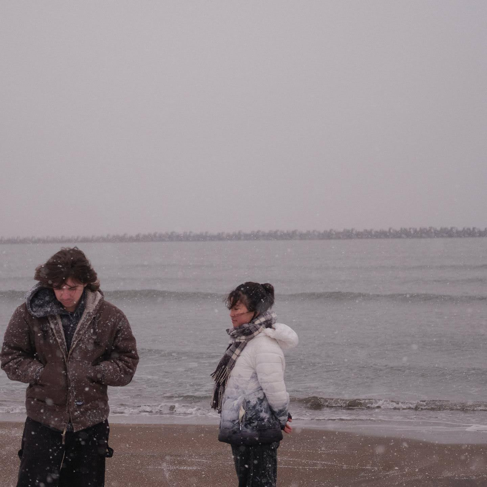
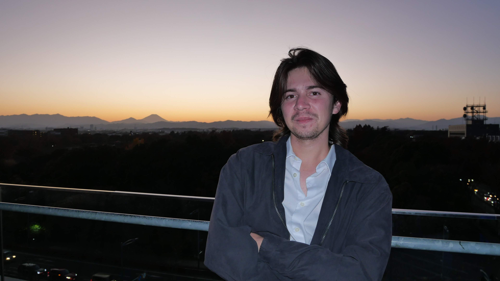
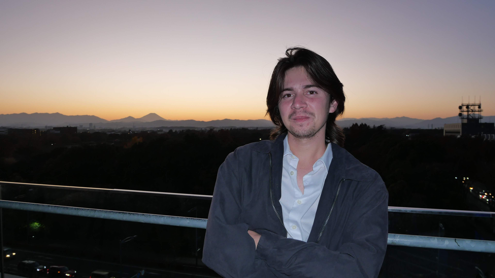

 

💜 To Nathan,
Love takes miles, love takes years. You’re worth the wait and the distance, and I can’t wait to see you. I love you so much. This letter is going to mainly be things you’ve heard already, a massive dump from start to finish.
I didn't think I could love someone this much in such a short time. I thought you were cool and quiet as a first impression, and I really wanted to be friends with you. I remember walking with you and talking when we were walking to the train, talking about anime, and I thought you were really interesting. You knew a lot about everything. I watched Look Back that week since I thought if you recommended it, it would be good, going into it completely blind lol. Caught me so off guard, but it was so good though!
I didn’t really get close with you until we started going to church together, though, which I think is really awesome and meaningful that we got close through church and God. And we made so many good friends through both churches. Also, I miss everyone so much. Sometimes I really think it was meant to be. If not for this study abroad program, I would never have met you in my life, let alone gotten so close to you. You really are a gift and blessing to me, and also to everyone around you. Like the line from “First Love” (what we saw on the beach in Hokkaido, we should watch the show, it was also filmed in the park we lived by): “The chances of meeting and becoming close friends with someone in common are 1 in 2 billion; and the chances of meeting a soulmate are 1 in 6 billion.”
I still think it’s funny you picked shoes with me for 3 hours that first day. I thought you were so well tempered and patient for not getting frustrated with me. You really gave really nice older sibling vibes. And now thinking back, you’re also amazing boyfriend material haha. After that, I remember meeting up with you after school and getting katsu together. I always enjoyed long train rides with you to everywhere, church or school, or wherever we were going. You are so easy to be around, it’s never awkward, even when we barely knew each other.
Then it just kept rolling, we started hanging out so much more and getting closer and closer together. Some of my most favorite days in Japan were days spent with just you. The art museum and Skytree day was so nice and peaceful, I could relive that day over and over. It was so calming and fulfilling, from the coffee to the art museum in silence, to walking around the temple, and the Skytree. I loved the day after my birthday, where we got food, and went to Kichijoi for the food, walking around, and to the cat cafes. Halloween was also so nice because of you. I thought your costume was so good and you looked so cute. I loved holding your hands through the crowd. I was kinda getting butterflies that night. I loved every Sunday, because we went to church, enjoyed the fellowship and company of friends, but also most because of you. The BBQ and fall park day was so nice. But also, every time we go to do homework at a cafe together. I just enjoyed your presence. I think I would be happy if we did nothing and just sat somewhere all day. Your personality and the person you are just make everyone around you so happy. I feel so at peace when I’m with you, and so happy always. “... Love always protects, always trusts, always hopes, always preserves” (1 Corinthians 13:7), and I hope we could always be that and do that for each other.
A pivotal moment where I think we got really close was when you opened up to me at the park that day. I wasn’t expecting it, and till this day, I’m so thankful that you trusted me so much to show me your vulnerable side and wanted to talk with me. I felt so bad for you, and just wanted to hug you and tell you it’s okay. It hurts so much hearing about all your self-doubt and thoughts. I will say everything to you a thousand times over, but you are so, so, so amazing. You are one of the kindest, gentlest, sweetest, most caring, and loving people I’ve ever seen. You care so much about everyone around you, and are such good friends, and everyone loves you so much. I wish you would learn to stop pleasing people, self-doubt, and value yourself more, and see how good you are, as I see you. I pray that everything good in the world will come to you, great friends, experiences, opportunity, family, health, safety, and that you deserve everything. I remember praying for you when I was drunk, it was something I really wanted to do for you, for how troubled and vulnerable you seemed. Here’s a verse I don’t think I’ve sent you yet if you are anxious again: Peace I leave with you; my peace I give to you. Not as the world gives do I give to you. Let not your hearts be troubled, neither let them be afraid. (John 14:27)
I miss all the midnight walks after we’re drunk, or talking on the balcony. I often worry about you. You seem so pure and innocent and quiet sometimes. I worry if we’re being too much and are taking advantage of you. I wish I cared, paid more attention, and was more protective of you. I also remember one of the last few days we walked to another park and talked and looked at the stars. I felt for you so much, and I just wanted to be happy and to see you smile and stop worrying. I felt so bad when I didn’t realize you were having such a bad time for Thanksgiving. I really wish I stood up for you…
I miss sleeping in the same bed with you in your room, and in Sapporo, I miss your embrace, hugging, and being so close to you. Admittedly, it was wrong, but I don’t regret anything I’ve done with you, even though I wish I had done it differently. I feel bad, since I was not available, yet I was always initiating and making moves on you, I was kinda leading you on. I should’ve realized how hard I was falling for you. But I’m so so so glad everything happened, I don't regret a single day spent with you. And it’s the happiest I’ve ever been. I love you so much, I wouldn’t trade the world for it.
I know you said you liked reassurance, and I would give it to you anytime, because that is how I feel, and how I always want you to feel also. I also want you to feel secure and loved, and I want you to feel confident and loved in our relationship. I want you to feel how much other people love and appreciate you, especially how much I love you. I’m so sorry that I made you feel hot and cold before, but I really, really want you to feel loved and appreciated as you should be. I love you so so so much, I only want you the most, and I’m so certain that I always want to be with you for the future. I can’t wait to have cats and dogs and live with you. I can’t wait to live with you and move in together, to enjoy meals, cooking, music, and dancing in the kitchen together. I can’t wait to fall asleep and wake up next to you every day, and share every moment with you. I’ve never gotten tired of spending time with you, and I don’t think I ever will. I will never leave you, and you are all I want with all my heart. I will hold you and pet you every day and tell you how much I love you. I find it crazy how compatible we are sometimes, in interests, hobbies, religion, family, and even in the bedroom; it really feels like we’re made for each other sometimes. I’m so, so glad I found you, and I would never let you go now.
Thank you so much for always being so patient and supporting me. You are always there for me when I’m down, having mood swings, doubting myself, or anything else. I always feel so much more comfortable and a lot better after. I appreciate you, and I don't feel like I deserve you, but I want to be a better person and grow for you and grow with you. I wish I could do that for you, and to always always make you feel as happy and secure as you make me feel. I love you more every day. You are such a good boyfriend, a friend, a great and awesome person in general. You are the kindest, most gentle, most amazing person ever. And I want you to be happy and feel loved by those around you above all else. It breaks my heart every time I see you sad. I really wish I were there to comfort you and tell you how much I love and care for you and give you soft kisses and hugs and encouragement.
Ever since I was with you, every time I call or talk to you, I feel so happy talking to you. You’re the best boyfriend ever. You make me smile every day, and bring so much joy and happiness to my life. I love calling you for hours, sexting, just talking about whatever, sleeping to a jam, or just yapping and enjoying each other’s company. I never get tired of talking to you and spending time with you. We always call for hours on end, and it never feels like that, and I wish there were more hours in the day, so I can talk to you more and spend more time with you.
Thank you so much for being my Valentine and being in my life. I love you so so much. I value you so much, and appreciate you so much, that I cannot put into words how much I love you. No matter what happens and how things turn out, I will still be your best friend. I love you so much, and I want you to be happy above all else. You’re my favorite person ever, and I only want you. You’re the best boyfriend I could ever ask for and better than anything I could ever imagine.
You’re also so romantic. I love it every time you text me lovey-dovey texts. I absolutely adored the pins you got me in Japan. I was not experiencing it at all, especially the Ichoko Aoba pin, and I appreciate and cherish it so much. I love how thoughtful you are, how much you appreciate spending time together, getting reassurance, supporting me, liking gifts, liking physical contact, and fantasizing about the future. You really are everything I dream about. I miss touching you on the train and trying to get subtle eye contact with you. I miss sharing music with you on the train. I love our music together, and I can’t wait to dance in the kitchen with you to our music and dimly lit lights. I love staring at you, you’re so beautiful, and I love how you look at me on the call and tell me that I’m pretty or hot. I cannot wait to see you in Seattle, and I also can’t wait to see the gift for Valentine’s Day. I know I will love it so much and wear it every day.
I honestly cannot believe I get to call you mine. Happy Valentine's Day, baby. I love you so much. I can’t wait to be in your embrace and feel your kisses and hugs every day, and fall asleep together. You’re so pretty and hot. I love you so much.
Love you always and forever,
Allie
Valentine’s Day 2026 (our first one together)